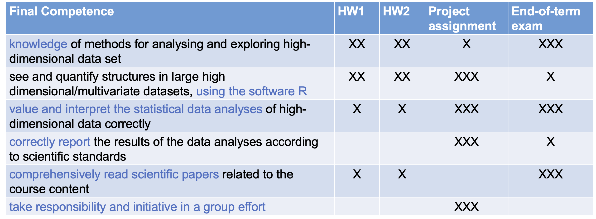

Organisation
Lectures
- Theory (6-7 x 2.5 hours)
- PC Labs (5 x 2.5 hours)
- Q&A session (2.5 hours)
- Paper reading sessions (2 x 2.5hours)
Instructors
- Lectures: Lieven Clement (lieven[dot]clement[at]ugent[dot]be)
- Tutorials: Milan Malfait (milan[dot]malfait[at]ugent[dot]be)
Evaluation
End-of-term evaluation
- Exam in January: 10/20
- Written open book exam with open questions
Permanent evaluation
- 1 Project (7.5) + 1 homeworks (2.5): 10/20
- Written reports
- Group work:
- project 4 people,
- homework 2 people
Competences
Initial competences
- A basic course in probability theory and statistics (linear models, i.e, regression analysis and analysis of variance)
- Good basic knowledge of matrix algebra
Final competences
- The student has knowledge of methods for analysing and exploring high-dimensional data sets
- The student can see and quantify structures in large high dimensional/multivariate datasets, using the software R.
- The student can value and interpret the statistical data analyses of high-dimensional data correctly.
- The student can correctly report the results of the data analyses according to scientific standards
- The student can comprehensively read scientific papers related to the course content.
- The student can take responsibility and initiative in a group effort

LS0tCnRpdGxlOiAiSGlnaCBEaW1lbnNpb25hbCBEYXRhIEFuYWx5c2lzIDIwMjEtMjAyMiIKYXV0aG9yOiAiTGlldmVuIENsZW1lbnQiCmRhdGU6ICJzdGF0T21pY3MsIEdoZW50IFVuaXZlcnNpdHkgKGh0dHBzOi8vc3RhdG9taWNzLmdpdGh1Yi5pbykiCgotLS0KCiMgT3JnYW5pc2F0aW9uCiMjIExlY3R1cmVzCgotIFRoZW9yeSAoNi03IHggMi41IGhvdXJzKQotIFBDIExhYnMgKDUgeCAyLjUgaG91cnMpCi0gUSZBIHNlc3Npb24gKDIuNSBob3VycykKLSBQYXBlciByZWFkaW5nIHNlc3Npb25zICgyIHggMi41aG91cnMpCgojIyBJbnN0cnVjdG9ycyAKCi0gTGVjdHVyZXM6IExpZXZlbiBDbGVtZW50IChsaWV2ZW5bZG90XWNsZW1lbnRbYXRddWdlbnRbZG90XWJlKQotIFR1dG9yaWFsczogTWlsYW4gTWFsZmFpdCAobWlsYW5bZG90XW1hbGZhaXRbYXRddWdlbnRbZG90XWJlKQoKIyBFdmFsdWF0aW9uCgojIyBFbmQtb2YtdGVybSBldmFsdWF0aW9uCgotIEV4YW0gaW4gSmFudWFyeTogMTAvMjAKLSBXcml0dGVuIG9wZW4gYm9vayBleGFtIHdpdGggb3BlbiBxdWVzdGlvbnMKCiMjIFBlcm1hbmVudCBldmFsdWF0aW9uIAoKLSAxIFByb2plY3QgKDcuNSkgKyAxIGhvbWV3b3JrcyAoMi41KTogMTAvMjAKLSBXcml0dGVuIHJlcG9ydHMKLSBHcm91cCB3b3JrOiAKICAgIC0gcHJvamVjdCA0IHBlb3BsZSwgCiAgICAtIGhvbWV3b3JrIDIgcGVvcGxlCgojIENvbXBldGVuY2VzCiMjIEluaXRpYWwgY29tcGV0ZW5jZXMKCi0gQSBiYXNpYyBjb3Vyc2UgaW4gcHJvYmFiaWxpdHkgdGhlb3J5IGFuZCBzdGF0aXN0aWNzIChsaW5lYXIgbW9kZWxzLCBpLmUsIHJlZ3Jlc3Npb24gYW5hbHlzaXMgYW5kIGFuYWx5c2lzIG9mIHZhcmlhbmNlKQotIEdvb2QgYmFzaWMga25vd2xlZGdlIG9mIG1hdHJpeCBhbGdlYnJhCgojIyBGaW5hbCBjb21wZXRlbmNlcwoKMS4gVGhlIHN0dWRlbnQgaGFzIGtub3dsZWRnZSBvZiBtZXRob2RzIGZvciBhbmFseXNpbmcgYW5kIGV4cGxvcmluZyBoaWdoLWRpbWVuc2lvbmFsIGRhdGEgc2V0cwoyLiBUaGUgc3R1ZGVudCBjYW4gc2VlIGFuZCBxdWFudGlmeSBzdHJ1Y3R1cmVzIGluIGxhcmdlIGhpZ2ggZGltZW5zaW9uYWwvbXVsdGl2YXJpYXRlIGRhdGFzZXRzLCB1c2luZyB0aGUKc29mdHdhcmUgUi4KMy4gVGhlIHN0dWRlbnQgY2FuIHZhbHVlIGFuZCBpbnRlcnByZXQgdGhlIHN0YXRpc3RpY2FsIGRhdGEgYW5hbHlzZXMgb2YgaGlnaC1kaW1lbnNpb25hbCBkYXRhIGNvcnJlY3RseS4KNC4gVGhlIHN0dWRlbnQgY2FuIGNvcnJlY3RseSByZXBvcnQgdGhlIHJlc3VsdHMgb2YgdGhlIGRhdGEgYW5hbHlzZXMgYWNjb3JkaW5nIHRvIHNjaWVudGlmaWMgc3RhbmRhcmRzCjUuIFRoZSBzdHVkZW50IGNhbiBjb21wcmVoZW5zaXZlbHkgcmVhZCBzY2llbnRpZmljIHBhcGVycyByZWxhdGVkIHRvIHRoZSBjb3Vyc2UgY29udGVudC4KNi4gVGhlIHN0dWRlbnQgY2FuIHRha2UgcmVzcG9uc2liaWxpdHkgYW5kIGluaXRpYXRpdmUgaW4gYSBncm91cCBlZmZvcnQKCiFbXSguL2ZpZ3VyZXMvc2NvcmVNYXRyaXgucG5nKQoKCg==